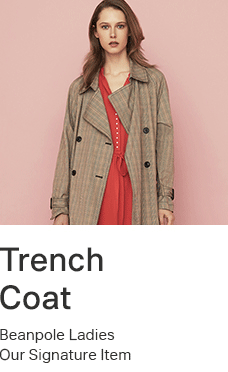
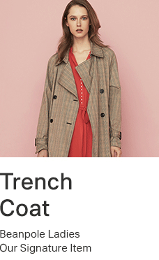

css3선택자_01_property(속성)_selector(선택자) p.118
속성선택자는 html태그요소에 있는 속성(href, src, alt, type, title......)을 선택하여 서식을 적용하고자 할 때 사용하는 선택자로서 기본속성, 문자열속성 선택자가 있다.
1. 기본 속성선택자
선택자[속성] : 선택자안에 '속성'이 일치하는 것을 선택한다.
선택자[속성=값] : 선택자안에 '속성=값'이 일치하는 것을 선택한다.
예)
2. 문자열 속성선택자
속성값안에 있는 문자열에서 사용자가 찾고자 하는 문자를 선택하여 서식을 적용.
- 선택자[속성|(파이프라인)=값] : 특정값이 포함된 속성을 선택
- 선택자[속성^(써컴플렉스)=값] : 시작하는 단어가 포함된 속성 선택
- 선택자[속성$(달러사인)=값] : 끝나는 단어가 포함된 속성선택
- 선택자[속성*(아스테리스크)=값] : 문자열 안에서 해당단어 포함된 속성을 선택
- 선택자[속성~(틸트)=값] : 여러 값들 중 특정 '값'이 포함되어 있을 때 선택
이미지 확장자별(jpg, gif, bmp, png)로 테두리 속성을 넣어서 변경하고, 마우스 오버하면 같은 테두리 색상이 나오게 하기
 
